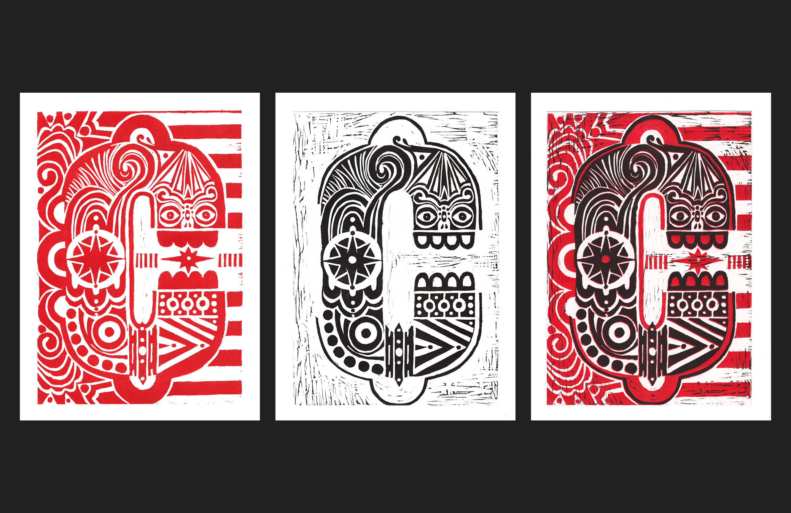

Cizin
Lettrine
Technique : Linogravure
Format : 21 × 29,7 cm
Cette lettrine « C » s’inspire de Cizin, figure maya associée à la mort. Son ornementation et ses couleurs inscrivent la lettre dans cet univers symbolique. La technique de la plaque perdue permet quant à elle de construire l’image par un jeu de superpositions.
